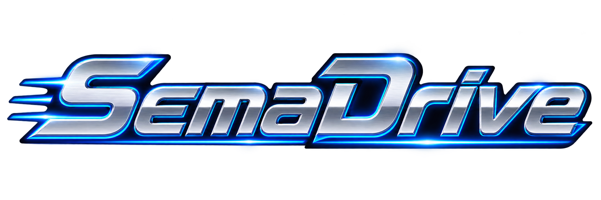

Follow the authored world
Supported gameplay expands within verified map, camera and collision bounds. Narrow rooms keep their intended size.
MEGA DRIVE / GENESIS · PART OF SEMATOR

Old favourites, room to breathe.
A beautiful home for your collection, with enhancements that stay true to the game.
ONE APPLICATION. TWO WORLDS.
Your Atari ST disks and Mega Drive cartridges live side by side. Each has its own home, its own atmosphere, and the same familiar controls.
Open the system switcher to move into SemaDrive. Browse region-aware covers, favourites and recent games, or filter the collection down to verified enhanced editions. The website’s game directory now lets you switch machines too.
Choose Atari ST or Mega Drive →THE GAME’S WORLD. MORE OF IT.
Real scenery. Real boundaries.
Never a stretched native picture.
Supported gameplay expands within verified map, camera and collision bounds. Narrow rooms keep their intended size.
Fixed rooms and cutscenes retain native 4:3 framing. Aladdin’s Abu rooms and Carpet ride stay native too.
Supported GPU motion adds presentation frames between native updates. Game simulation, input and audio keep their original cadence.
VERIFIED ENHANCEMENTS IN 1.1.601
Streets of Rage 1–3 · Shinobi III · Gunstar Heroes · Bloodlines · Rocket Knight Adventures · Aladdin · Sonic 1–3 · Sonic & Knuckles · Sonic 3 & Knuckles · Golden Axe I & II · Altered Beast · Road Rash II · Lightening Force
Find your game and edition ↗Enhancements are tied to verified cartridge revisions and supported scenes. Thunder Force IV Europe keeps native gameplay framing. Check edition details in the directory.
THE SOUND OF YOUR COLLECTION
Original cartridge soundtracks, in a jukebox built around the games you own.
Import supported cartridges as albums, save favourites, revisit recent tracks and let the visualiser follow the music. Choose Atari ST or Mega Drive inside the jukebox, independently of your homepage. Starting in SemaDrive selects its soundtrack library first; if music was stopped when you quit, it stays stopped on your next launch.
All 19 profiled games now support cartridge soundtrack import, with 486 track selections. Sonic 1–3, Sonic & Knuckles, Sonic 3 & Knuckles, Golden Axe I/II, Streets of Rage 1–3, Shinobi III, Gunstar Heroes, Thunder Force IV / Lightening Force, Bloodlines, Rocket Knight Adventures and Aladdin join OutRun, Altered Beast and Road Rash II.
The level display is illustrative. During gameplay, supported profiles offer independent music and effects levels. Jukebox imports and audio controls have separate support lists. No games or soundtracks are bundled; this page plays no audio.
FAMILIAR, DOWN TO YOUR FINGERTIPS
Session and Settings share the same layout across machines. Save, rewind, restart, tune the picture, or adjust your controller without learning another frontend.
YOUR NEXT SESSION STARTS HERE
Put your own cartridge images or ZIPs in MegaDrive beside SemaTor, then open SemaDrive from the system switcher.
Get SemaTor 1.1.601 ↓Windows · Linux x86-64 · Linux ARM64
Android remains a private test release. No games or console BIOS are included.